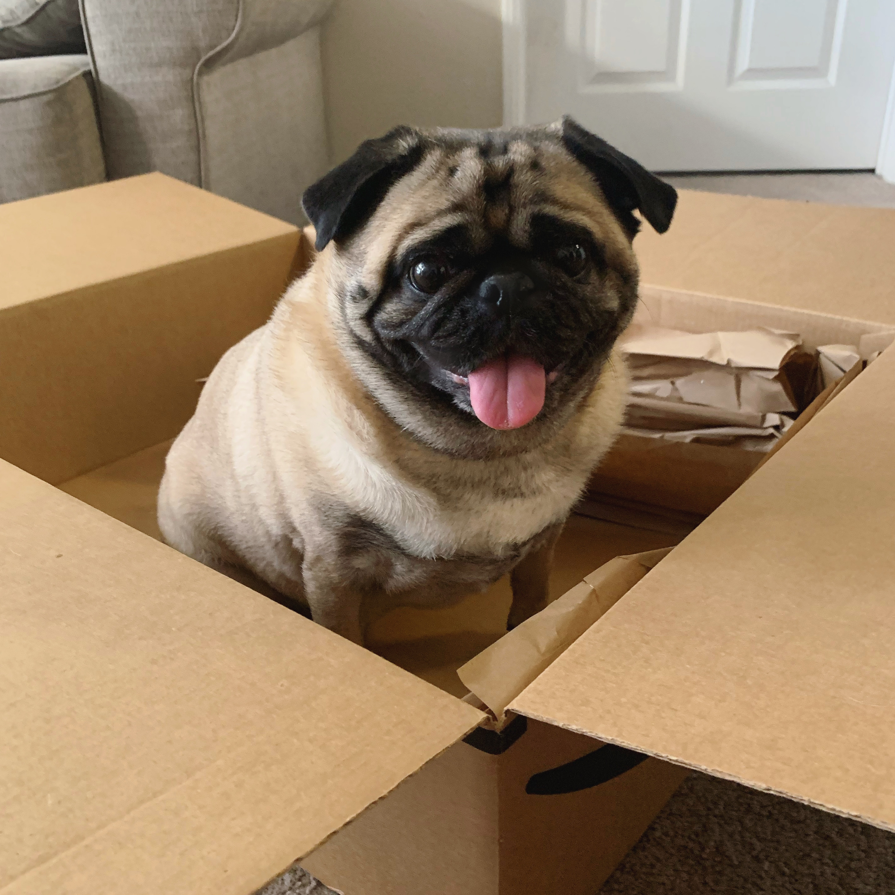

My name is Carlos, and I am extremely passionate about programming and sports...pretty much. I like to stay phsyically active by playing basketball 🏀 with my friends in my spar time. I am a big 🔥 Miami Heat 🔥 fan! When I am not watching basketball I am either coding 💻 or spending time with my wife 👫. Oh yeah, and I also go to school at San Jose State University in San Jose, California. I am currently studying psychology 📚, but I am interested to see how I can mix both programming and psych to futher my career. User experience sounds like a job that combines both, I am just excited for my future! I love to workout and just stay fit with all my friends on the weekends when we play basketball. I also love to try new food! I am not a picky eater so that is a plus for everyone that meets me! Especially because my wife is half Vietnamese and half Portugese. Clothes are also a big thing for me because I like to stay up to date on streetwear and shoes. I collect a lot of different "hype shoes." I am also a big soccer/futbol fan! Manchester United is my team!